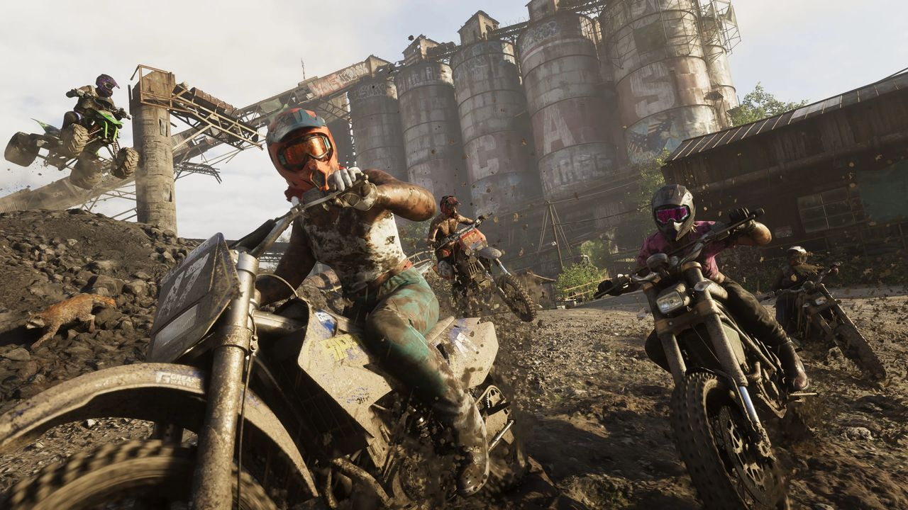
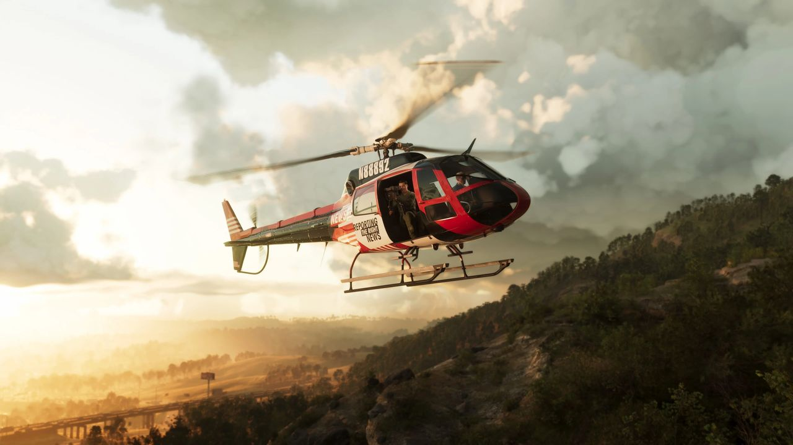
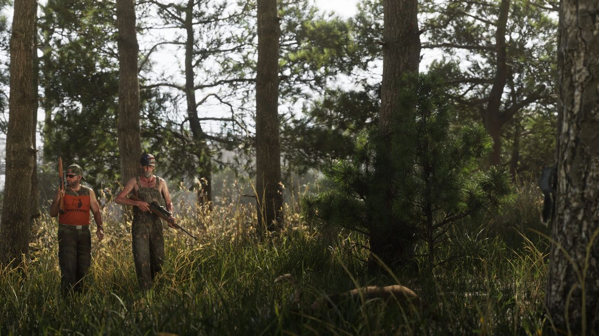
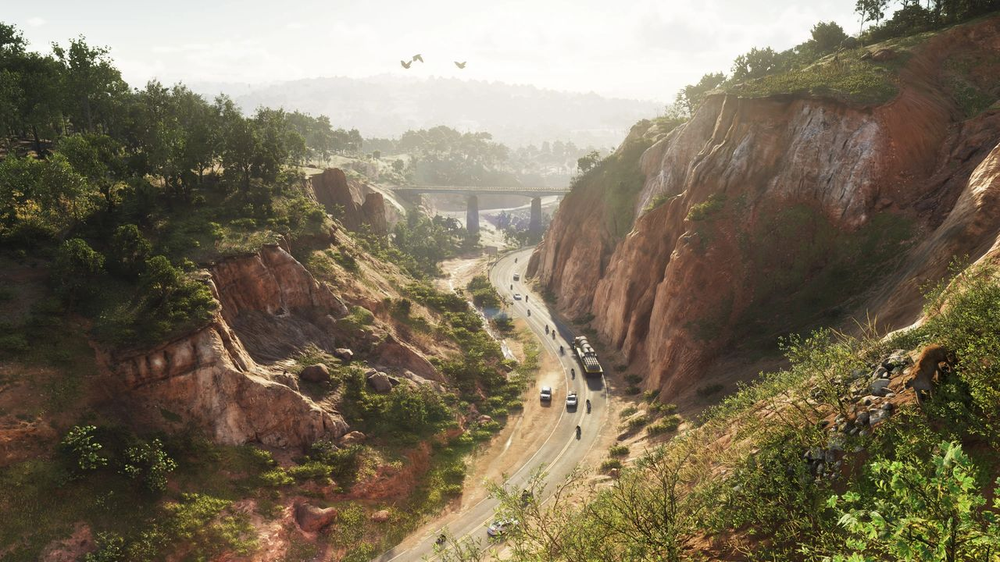
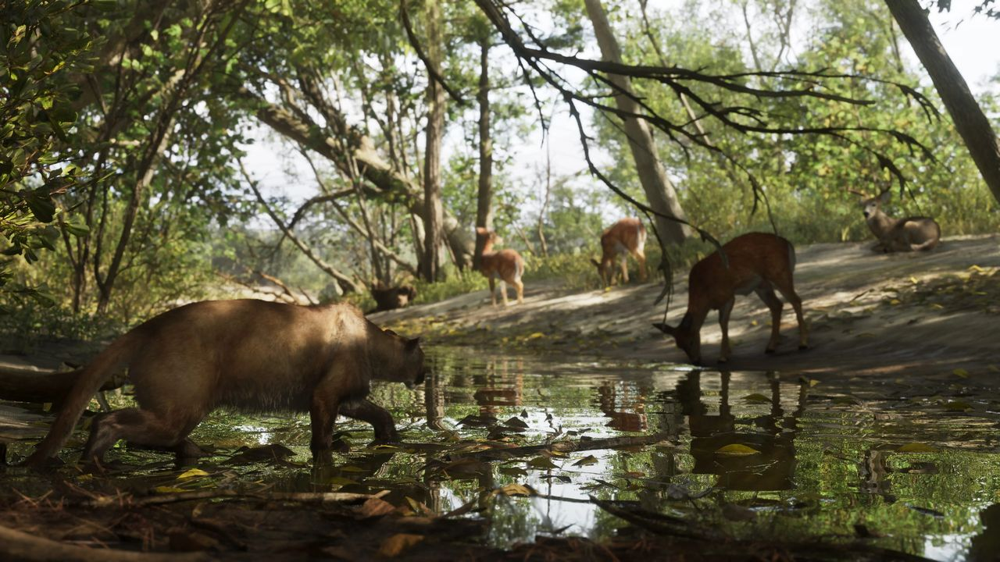
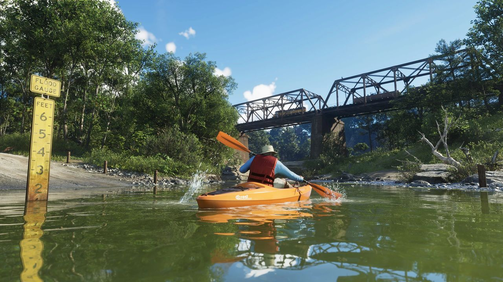
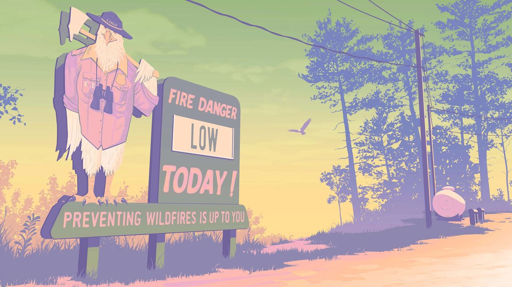
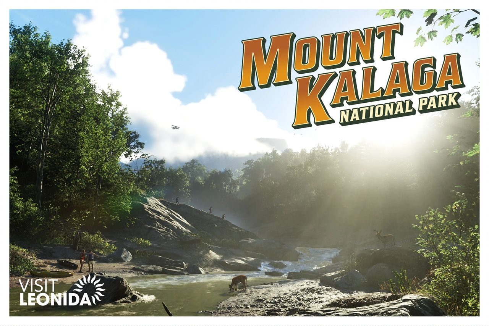

Le parc national de Mount Kalaga se situe à la frontière nord de l'État de Leonida. Ses paysages se composent de forêts rudes, de canyons et de cours d'eau. On y pratique la pêche, le kayak, la chasse et la course tout-terrain, et on y croise des cerfs, des pumas et des renards.
Il représente la partie la plus septentrionale de Leonida, contre l'État de Gloriana (la « ligne Leonida-Gloriana »). Les environs offrent des sentiers pour quads, des parcs de boue, des pistes de VTT, des fermes, des ranchs haut de gamme et un golf privé.
Galerie








© Rockstar Games / Take-Two Interactive — images officielles de GTA VI (bandes-annonces, captures, site officiel), via GTA Wiki.
Inspiration réelle
Le paysage s'inspire de la Géorgie et du nord de la Floride : le canyon rappelle le Providence Canyon State Park et la montagne Table Rock, en Caroline du Nord. Le nom « Kalaga » vient d'un mot cherokee signifiant « est » ou « lever du soleil ». La rivière ressemble à la Suwannee, qui traverse le nord de la Floride et le sud de la Géorgie.
À voir aussi
La faune du parc est détaillée dans la fiche Faune de Leonida.